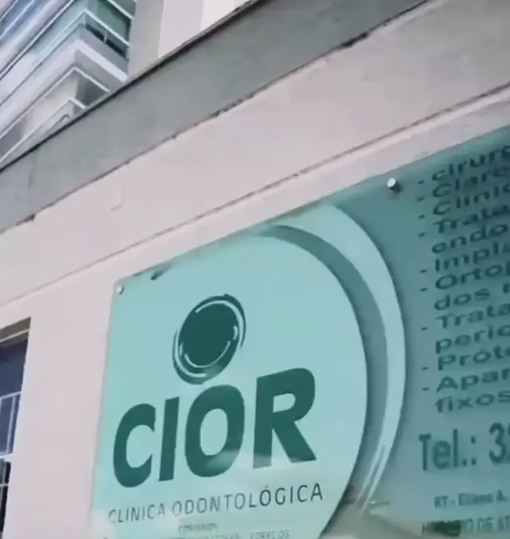
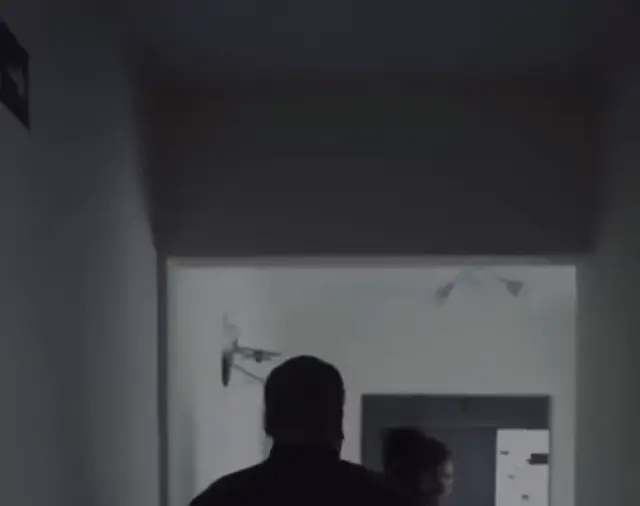

CIOR Clínica Odontológica Uberlândia, MG
Agende sua avaliaçãoUm sorriso muda tudo.

Há 17 anos, um propósito nasceu.
Cuidar da sua saúde bucal com excelência.
Você se sente realmente à vontade quando sorri?
Ao longo dos anos cuidando de pessoas e de sorrisos, eu percebi que muitas vezes o que incomoda não é apenas o sorriso, é a segurança, a autoestima, a vontade de aparecer bem numa foto, numa selfie.
Dra. Eliane Eliane A. Barbosa Bisinoto · 13475
da bio de @ciorodonto
“17 anos cuidando de sorrisos e histórias.
+ 10 mil sorrisos transformados.
Aqui cada sorriso é único.”
Tratamentos
Ambientes planejados para o seu cuidado.

- Clínico geral
- Limpeza e periodontia
- Atendimento infantil
- Extrações
- Implantes dentários
- Próteses
- Endodontia
- Ortodontia
- Clareamento
- Ortopedia funcional dos maxilares
Uma equipe comprometida com qualidade e precisão.
Cada tratamento começa com um planejamento individualizado, porque cada paciente é único.
Perguntas
Suas dúvidas sobre clareamento também são estas?
Sensibilidade
Existem técnicas e produtos que diminuem ao máximo a sensibilidade.
Resultado
Depende da cor natural do seu dente. Clareando até dois ou três tons.
Técnica usada
É feita uma análise de seus dentes pelo profissional, que poderá te indicar a que for melhor para seu caso. Não existe clareamento a laser.
Clareamento caseiro
O paciente faz em casa, com moldeira e produto indicado pelo dentista. Tudo é orientado: tempo de uso, quantidade e cuidados. É mais gradual, mas muito seguro e eficaz.
Clareamento associado
É a combinação dos dois. Começamos no consultório e depois continuamos em casa. Potencializa o resultado e melhora a durabilidade.
Você tem um espaço no sorriso causado pela perda de um dente?
O primeiro passo é entender o que o seu sorriso precisa. Implante dentário: uma das possibilidades para recuperar a função e a estética do seu sorriso. O tratamento é indicado de acordo com as condições de cada caso.
“A clínica é excelente, os profissionais são maravilhosos e muito competentes. Desde a recepção até a realização dos procedimentos com os dentistas, nada a reclamar. Recomendo!”
Pequenos cuidados têm o poder de transformar a forma como nos sentimos todos os dias.
E você, há quanto tempo não reserva um momento para cuidar de si?
Agende
17 anos construindo sorrisos com responsabilidade e confiança.
Agende sua avaliação pelo WhatsApp R. Tupaciguara, 601 - Nossa Sra. Aparecida, Uberlândia - MG(34) 99897-9595 · Como chegar